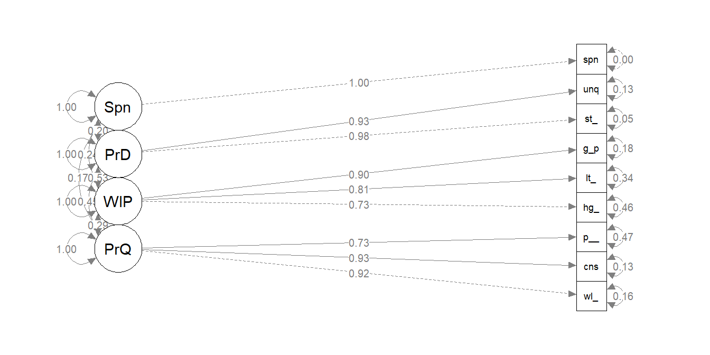
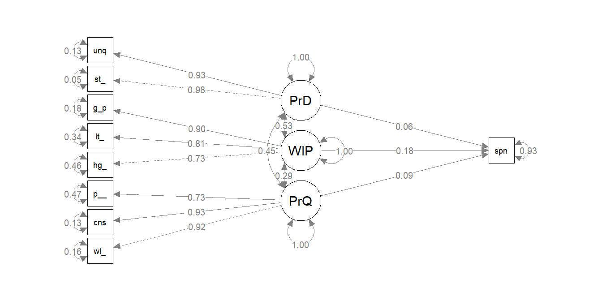
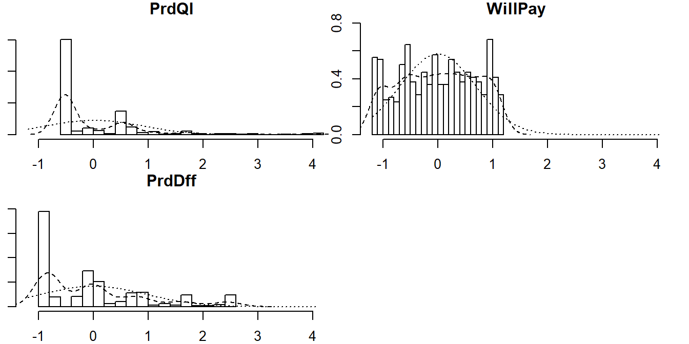

4.9 Replication
The replication phase establishes criterion validity and stability (reliability). Criterion validity is a measure of the relationship between the construct and some external measure of interest. Measure criterion validity with concurrent validity, how well items correlate with an external metric measured at the same time, and with predictive validity, how well an item predicts an external metric. Stability means the survey produces similar results over repeated test-retest administrations.
4.9.1 Criterion Validity
4.9.1.1 Concurrent Validity
Concurrent validity is a measure of whether our latent construct is significantly correlated to some outcome measured at the same time.
Suppose you have an additional data set of consumer spending on the brand. The consumer’s perception of the brand should correlate with their spending. Before checking for concurrent validity, standardize the data so that likert and other variable types are on the same scale.
set.seed(20201004)
brand_rep <- brand_rep %>%
mutate(spend = ((well_made + consistent + poor_workman_r)/3 * 5 +
(higher_price + lot_more + go_up)/3 * 3 +
(stands_out + unique)/2 * 2) / 10)
brand_rep$spend <- brand_rep$spend + rnorm(559, 5, 4) # add randomness
brand_rep_scaled <- scale(brand_rep)Do respondents with higher scores on our the brand reputation scale also tend to spend more at the store? Build model, and latentize spend as Spndng and model with the ~~ operator. Fit the model with the semTools::sem() function.
brand_rep_cv_mdl <- paste(
"PrdQl =~ well_made + consistent + poor_workman_r",
"WillPay =~ higher_price + lot_more + go_up",
"PrdDff =~ stands_out + unique",
"Spndng =~ spend",
"Spndng ~~ PrdQl + WillPay + PrdDff",
sep = "\n"
)
brand_rep_cv <- lavaan::sem(data = brand_rep_scaled, model = brand_rep_cv_mdl)Here are the standardized covariances. Because the data is standardized, interpret these as correlations. The p-vales are not significant because the spending data was random.
## lhs est.std se z pvalue ci.lower ci.upper
## 1 PrdQl 0.174 0.043 4.092 0 0.091 0.258
## 2 WillPay 0.241 0.043 5.654 0 0.157 0.324
## 3 PrdDff 0.198 0.041 4.779 0 0.117 0.279
## 4 Spndng 1.000 0.000 NA NA 1.000 1.000
Each dimension of brand reputation is positively correlated to spending history and the relationships are all significant.
4.9.1.2 Predictive Validity
Predictive validity is established by regressing some future outcome on your established construct. Assess predictive validity just as you would with any linear regression – regression estimates and p-values (starndardizedSolution()), and the r-squared coefficient of determination inspect().
Build a regression model with the single ~ operator. Then fit the model to the data as before.
brand_rep_pv_mdl <- paste(
"PrdQl =~ well_made + consistent + poor_workman_r",
"WillPay =~ higher_price + lot_more + go_up",
"PrdDff =~ stands_out + unique",
"spend ~ PrdQl + WillPay + PrdDff",
sep = "\n"
)
brand_rep_pv <- lavaan::sem(data = brand_rep_scaled, model = brand_rep_pv_mdl)
#lavaan::summary(brand_rep_pv, standardized = T, fit.measures = T, rsquare = T)
semPlot::semPaths(brand_rep_pv, whatLabels = "est.std", edge.label.cex = .8, rotation = 2)
lavaan::standardizedSolution(brand_rep_pv) %>%
filter(op == "~") %>%
mutate_if(is.numeric, round, digits = 3)## lhs op rhs est.std se z pvalue ci.lower ci.upper
## 1 spend ~ PrdQl 0.094 0.048 1.949 0.051 -0.001 0.189
## 2 spend ~ WillPay 0.182 0.052 3.486 0.000 0.080 0.284
## 3 spend ~ PrdDff 0.060 0.055 1.092 0.275 -0.047 0.167## well_made consistent poor_workman_r higher_price lot_more
## 0.837 0.867 0.533 0.537 0.658
## go_up stands_out unique spend
## 0.816 0.951 0.866 0.072There is a statistically significant relationship between one dimension of brand quality (Willingness to Pay) and spending. At this point you may want to drop the other two dimensions. However, the R^2 is not good - only 7% of the variability in Spending can be explained by the three dimension of our construct.
Factor scores represent individual respondents’ standing on a latent factor. While not used for scale validation per se, factor scores can be used for customer segmentation via clustering, network analysis and other statistical techniques.
brand_rep_cfa <- lavaan::cfa(brand_rep_pv_mdl, data = brand_rep_scaled)
brand_rep_cfa_scores <- lavaan::predict(brand_rep_cfa) %>% as.data.frame()
psych::describe(brand_rep_cfa_scores)## vars n mean sd median trimmed mad min max range skew kurtosis
## PrdQl 1 559 0 0.88 -0.50 -0.19 0.09 -0.57 4.02 4.59 2.31 6.18
## WillPay 2 559 0 0.69 0.00 0.01 0.86 -1.15 1.16 2.31 -0.05 -1.18
## PrdDff 3 559 0 0.96 -0.04 -0.15 1.17 -0.88 2.54 3.41 1.09 0.35
## se
## PrdQl 0.04
## WillPay 0.03
## PrdDff 0.04
## $PrdQl
##
## Shapiro-Wilk normality test
##
## data: .x[[i]]
## W = 0.66986, p-value < 2.2e-16
##
##
## $WillPay
##
## Shapiro-Wilk normality test
##
## data: .x[[i]]
## W = 0.94986, p-value = 7.811e-13
##
##
## $PrdDff
##
## Shapiro-Wilk normality test
##
## data: .x[[i]]
## W = 0.82818, p-value < 2.2e-16These scores are not normally distributed, which makes clustering a great choice for modeling factor scores. Clustering does not mean distance-based clustering, such as K-means, in this context. Mixture models consider data as coming from a distribution which itself is a mixture of clusters. To learn more about model-based clustering in the Hierarchical and Mixed Effects Models DataCamp course.
Factor scores can be extracted from a structural equation model and used as inputs in other models. For example, you can use the factor scores from the brand reputation dimensions as regressors for a regrssion on spending.
brand_rep_fs_reg_dat <- bind_cols(brand_rep_cfa_scores, spend = brand_rep$spend)
brand_rep_fs_reg <- lm(spend ~ PrdQl + WillPay + PrdDff, data = brand_rep_fs_reg_dat)
summary(brand_rep_fs_reg)$coef## Estimate Std. Error t value Pr(>|t|)
## (Intercept) 7.1555354 0.1591195 44.9695738 3.363705e-187
## PrdQl 0.4260875 0.2062002 2.0663774 3.925620e-02
## WillPay 1.1365087 0.2805960 4.0503388 5.842799e-05
## PrdDff 0.1714031 0.2181813 0.7855993 4.324375e-01The coefficients and r-squared of the lm() and sem() models closely resemble each other, but keeping the regression inside the lavaan framework provides more information (as witnessed in the higher estimates and r-squared). A construct, once validated, can be combined with a wide range of outcomes and models to produce valuable information about consumer behavior and habits.
4.9.2 Test-Retest Reliability
Test-retest reliability is the ability to achieve the same result from a respondent at two closely-spaced points in time (repeated measures).
Suppose you had two surveys, identified by an id field.
# svy_1 <- brand_rep[sample(1:559, 300),] %>% as.data.frame()
# svy_2 <- brand_rep[sample(1:559, 300),] %>% as.data.frame()
# survey_test_retest <- psych::testRetest(t1 = svy_1, t2 = svy_2, id = "id")
# survey_test_retest$r12An r^2 <.7 is unacceptable, <.9 good, and >.9 very good. This one is unacceptable.
One way to check for replication is by splitting the data in half.
# svy <- bind_rows(svy_1, svy_2, .id = "time")
#
# psych::describeBy(svy, "time")
#
# brand_rep_test_retest <- psych::testRetest(
# t1 = filter(svy, time == 1),
# t2 = filter(svy, time == 2),
# id = "id")
#
# brand_rep_test_retest$r12If the correlation of scaled scores across time 1 and time 2 is greater than .9, that indicates very strong test-retest reliability. This measure can be difficult to collect because it requires the same respondents to answer the survey at two points in time. However, it’s a good technique to have in your survey development toolkit.
When validating a scale, it’s a good idea to split the survey results into two samples, using one for EFA and one for CFA. This works as a sort of cross-validation such that the overall fit of the model is less likely due to chance of any one sample’s makeup.
# brand_rep_efa_data <- brand_rep[1:280,]
# brand_rep_cfa_data <- brand_rep[281:559,]
#
# efa <- psych::fa(brand_rep_efa_data, nfactors = 3)
# efa$loadings
#
# brand_rep_cfa <- lavaan::cfa(brand_rep_mdl, data = brand_rep_cfa_data)
# lavaan::inspect(brand_rep_cfa, what = "call")
#
# lavaan::fitmeasures(brand_rep_cfa)[c("cfi","tli","rmsea")]